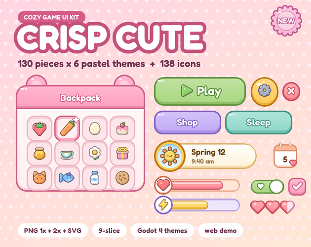

Crisp Cute: cute pastel UI kit for cozy games with 6 themes and 138 icons
Crisp Cute is a soft, chunky UI kit for cozy games (farming, life-sim, cafe, pet and cozy puzzle games): 130 pieces in each of 6 pastel themes (Strawberry Milk, Matcha, Honey, Lavender, Cloud, Peach) and 138 cozy colour icons. Everything comes as PNG (1x and 2x) and SVG with 9-slice borders listed, plus ready-made Godot 4 themes and the free Fredoka font.

- Contents
- 918 images: 130 pieces x 6 pastel themes, 138 colour icons
- Formats
- PNG 1x + 2x, SVG, sheets.json, Fredoka font (OFL), Godot 4 themes
- Price
- $6.99 on itch.io (anipixels.itch.io/crisp-cute)
- Free sampler
- 54 images, free on itch.io (anipixels.itch.io/crisp-cute-free)
- Licence
- Royalty-free for commercial and non-commercial projects, no credit required, no reselling or redistribution of the files
- Made by
- Anipixels, with procedural code written with an AI assistant (Claude)
What is included
- 780 themed pieces: 130 per theme in 6 themes, with the same file names and sizes in every theme so you can swap a whole look.
- The look: round, chunky shapes with a thick soft outline in a darker tint of each colour (never black), a gentle glint and a soft bottom shade. Small cute details where they fit: stitched panels, a cloud-topped panel, a window with round ears, a striped shop awning, hearts on radio buttons, toggles, slider knobs and name tags.
- Per theme: buttons (35), panels (10), dialogue (8), tabs (4), toggles (12), sliders (5), bars (10), inputs (5), scroll (3), lists (2), inventory (9), currency (3), badges (6), hud (5), rating (6), misc (7).
- Buttons: large, medium, small, square, round and a secondary-colour button, each with normal, hover, pressed and disabled states; close, plus, minus and arrow buttons.
- Panels and windows: plain, stitched, cloud-top, inset and accent panels, a window with a title bar, a window with round ears, a shop window with a striped awning, a card and a hollow frame.
- Dialogue: dialogue box, name tag, continue arrow, speech bubbles (tail left or right), tooltip, notification bubble, round avatar frame.
- Cozy HUD: day and weather plate, clock plate, coin plate, price tag, calendar tiles (day, today, festival, past), hotbar tray and slots, inventory slots (hover, selected, locked) with a count badge, a scalloped item frame.
- Bars: track and fills for progress, health, stamina and gold, a thin bar, and round heart / energy / star end caps.
- Also: tabs, check boxes, heart radio buttons, toggles, slider, text inputs, dropdown, scroll bar, list rows, ribbons, a hanging banner, a rosette sticker, badges, star and heart ratings, dividers, page dots and two cursors.
- 138 colour icons in the same soft style: interface (27), rewards (14), farming (18), nature (12), animals (13), food (19), tools (10), weather (13), world (12). Seeds, watering can, crops, flowers, mushrooms, fish, eggs, milk, cakes, tea, yarn, cats, dogs, bunnies, chicks, bees, weather, calendar, mail, quest scroll, backpack, shop and the usual interface icons.
- Godot 4 project: one Theme resource per theme (1x and 2x versions) with the Fredoka font set up, styling Button, CheckBox, CheckButton, ProgressBar, HSlider, LineEdit, OptionButton, TabContainer, panels, tooltips and more, with type variations for the extra shapes, and a demo scene.
Details
- 2754 image files: 918 images, each as PNG 1x, PNG 2x and SVG. That is 268 different designs (130 themed + 138 icons); the 6 themes multiply the themed ones.
- 73 of the 130 themed pieces are 9-slice / 3-slice, with every decoration inside the borders. Borders are in sheets.json and UNITY.txt. 4 pieces with stitches, bumps or stripes have middles that tile evenly.
- Icons are 32 px at 1x and 64 px at 2x. Transparent PNG, straight alpha.
- Every theme was checked for contrast: body text on the paper colour is 7:1 or better, and button labels use white with an outline in the art's own line colour. palette.json lists the numbers.
- Font: Fredoka (free, SIL Open Font License 1.1) is included unchanged with its licence. No piece has text baked in.
- Download size: CrispCute_Full.zip is 10.22 MB.
Formats and engines
- PNG at 1x (made for roughly 960 x 540 to 1280 x 720 layouts) and 2x (1080p and up, phones, HiDPI).
- SVG vector files of the same pieces and icons.
- sheets.json listing every piece: file paths, sizes, 9-slice borders, content padding, tiling and notes.
- palette.json with the colours of every theme and their measured contrast ratios.
- The free Fredoka font (SIL Open Font License 1.1), included unchanged with its licence.
- Godot 4 Theme resources (1x and 2x) with Fredoka set up, and a demo scene.
Works with: Any engine that loads PNG or SVG. Godot 4 (4.3 or newer; themes and demo scene load-tested headless in 4.7) gets ready-made themes. Unity, GameMaker, Construct, RPG Maker, Phaser and others use the PNGs with their nine-slice feature and the border values from sheets.json. Unity: sprites only, no prefabs and no pre-set borders; UNITY.txt gives the border values to type into the Sprite Editor.
Free sampler
The free sampler has 54 images as PNG (1x and 2x) and SVG, with a sheets.json of sizes and 9-slice borders and the free Fredoka font: 34 pieces from the Strawberry Milk theme and 20 colour icons.
The free itch.io page also hosts the playable browser demo of the full pack.
Licence
Use the graphics in any number of commercial or non-commercial projects (games, apps, websites, videos, streams, game jams). Edit, recolour, resize or otherwise modify them. Credit is appreciated but never required. You may not resell, redistribute or give away the graphics themselves, on their own or as part of another asset pack, UI kit or template, modified or not, and you may not claim them as your own original work in an asset pack.
This is a summary of the LICENSE.txt inside the download. The sampler's copy of that file: crisp-cute.txt.
Questions
Which engines does it work with?
Any engine that loads PNG or SVG. Godot 4 gets ready-made themes; Unity, GameMaker, Construct, RPG Maker, Phaser and others use the PNGs with their nine-slice feature and the border values from sheets.json.
Is it pixel art?
No. It is smooth vector-style art, sharp at 1x and 2x; the SVGs scale to any size.
Can I mix themes?
Yes. Every theme has the same pieces at the same sizes, so a Matcha button drops into a Honey window.
How is it different from Crisp Kit?
Crisp Kit is a flat, rounded kit for casual and mobile-style games, with 8 colour themes, white and dark icons and keyboard, mouse and gamepad prompts. Crisp Cute is made for cozy games: pastel themes with soft outlines and cute details, cozy HUD pieces (day and weather plate, calendar tiles, hotbar, price tags), 138 colour icons for farming, food and animals, and the Fredoka font.
Are there sounds?
Not in this pack. Crisp Cozy (UI sounds) and Crisp Cozy Life (gameplay sounds) are separate sound packs made to go with it.
Is there a free version?
Yes: Crisp Cute Free has 54 images to test in your project. The same 54 images can be previewed on this site's UI kit preview.
Can I use it in a commercial game, and do I have to give credit?
It is royalty-free for commercial and non-commercial projects and no attribution is needed. You may not resell or redistribute the assets themselves, modified or not. The bundled Fredoka font keeps its own open licence (OFL).
Was AI used to make it?
Yes, for the code. Made with AI assistance: every shape is drawn procedurally by code that was written with the help of Claude, an AI assistant. No AI image generators, no traced or third-party art. The only third-party file is the free Fredoka font (SIL Open Font License 1.1), included unchanged.
Screenshots


How it was made
Made with AI assistance: every shape is drawn procedurally by code that was written with the help of Claude, an AI assistant. No AI image generators, no traced or third-party art. The only third-party file is the free Fredoka font (SIL Open Font License 1.1), included unchanged.
Crisp Cute is part of the Crisp Everything Bundle: all 14 Crisp packs for $19.99 instead of $81.86 bought one by one. View the bundle on itch.io